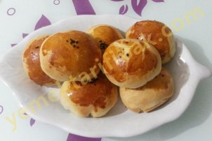
Kullanılan Malzemeler
1 tane yumurta(sarısı üzeri için ayrılır)
1 su bardağı ılık süt
2 bardak ılık su
1 su bardağı sıvı yağ
4 yemek kaşığı şeker
1 tatlı kaşığı tuz
1 paket yaş maya
alabildiği kadar un
İç Malzemesi:
1 kase zeytin
Zeytinli Poğaça Yapılışı
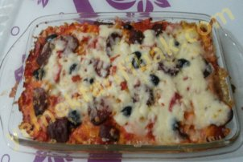
Kullanılan Malzemeler
1 su bardağı ılık süt
1 su bardağı ılık su
Yarım paket yaş maya
1 çay bardağı sıvı yağ
2 yemek kaşığı şeker
1 tatlı kaşığı tuz
Alığı kadar un
Üzeri için:
Siyah zeytin
Konserve mısır
Salam
Sucuk
Rendelenmiş kaşar peyniri
1 yemek kaşığı domates salçası
1 yemek kaşığı rendelenmiş domates
1 yemek kaşığı mayonez
Kolay Pizza Yapılışı
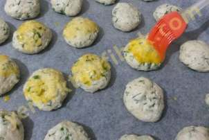
Kullanılan Malzemeler
2 yumurta(bir tanesinin sarısını üzeri için ayırın)
1 su bardağı yoğurt
Yarım paket margarin
1 çay bardağı sıvı yağ
1 çay kaşığı tuz
5 yemek kaşığı lor peyniri(200 gr kadar)
1 paket kabartma tozu
1 demet dereotu
3 veya 4 bardak un
Dereotlu Kolay Poğaça Yapılışı
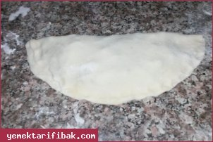
Kullanılan Malzemeler
yarım kg ıspanak
200gr.kıyma
1 tane soğan
4 su bardağı un
1 paket kuru instant maya (1 yemek kaşığı kuru maya)
sıvı yağ
tuz
tereyağ
Ispanaklı Gözleme Yapılışı
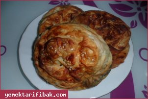
Kullanılan Malzemeler
yarım kilo ıspanak
4 adet hazır yufka
2 adet yumurta
250 gr lor peyniri
1 çay bardağı sıvı yağ
1 çay bardağı yoğurt
1 adet soğan
1 adet yoğurt
1 çay kaşığı pul biber
Ispanaklı Dolama Börek Yapılışı
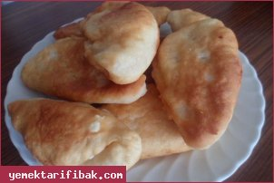
Kullanılan Malzemeler
1 yemek kaşığı kuru pakmaya
2 su bardağı ılık süt
2 yumurta
1 çay bardağı sıvı yağ
250 gr peynir
yeteri kadar un
1 tatlı kaşığı tuz
1 tatlı kaşığı şeker
Kızartma Poğaça Yapılışı
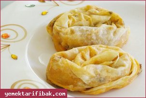
Kullanılan Malzemeler
İç Harcı için;
300 Gr. Orta Yağlı Kıyma
1 Orta Boy Soğan
1 Çay Bardağı Sıvı Yağ
1 Yemek Kaşığı Biber Salçası
8-10 Dal Maydanoz
Tuz - Karabiber
Ve
3 Adet Yufka
Sosyete Mantısı Yapılışı
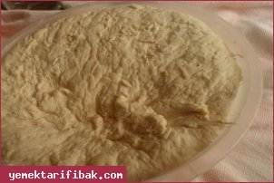
Kullanılan Malzemeler
5 bardak un
2 yemek kaşığı kuru maya
2 yemek kaşığı tuz
1 yemek kaşığı şeker
Kızartmak için sıvı yağ
Kandil Lokması Yapılışı
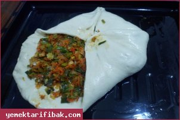
Kullanılan Malzemeler
1 yemek kaşığı toz pakmaya veya yarım paket yaşmaya
3 bardak süt
1 bardak su
2 yemek kaşığı şeker
1 yemek kaşığı tuz
1 çay bardağı sıvıyağ
Alabildiği kadar un
1 yumurta
İç Malzemesi
Yarım kilo pırasa
1 fincan sıvıyağ
1 havuç
1 çay kaşığı pul biber
1çay kaşığı nane
1 çay kaşığı karabiber
1 çay kaşığı tuz
Pırasalı Fırın Böreği Yapılışı
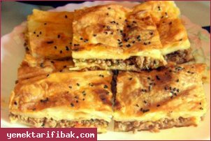
Kullanılan Malzemeler
1 tavuk gögsü
1 soğan
1 domates
2 sivri biber
tuz,karabiber
sıvıyağ
krep için:
4 yumurta
1 çay b. sıvıyağ
1 çay b. su
1 su b.süt
2 su b. un
panelemek için:
1 çay b.süt
1 yumurta
mısır unu
Tavuk Kıymalı Börek Yapılışı
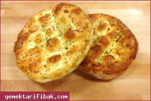
Kullanılan Malzemeler
5 Bardak un
300 ml ılık su
100 ml ılık süt
1 çorba kaşığı tereyağ
3 çorba kaşığı zeytin yağı
1 çorba kaşığı toz şeker
1 tatlı kaşığı tuz
1 paket Yuva instant kuru maya
Üzeri için
Susam
Çörekotu
1Yumurta sarısı
Yoğurt
Ramazan Pidesi Yapılışı
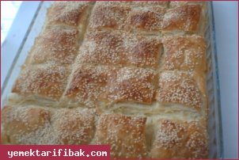
Kullanılan Malzemeler
2 Tane yufka
6 yaprak milföy hamuru
1 çay bardağı Soda
yarm su b.sıvıyağ
yarım su b.süt
1 tane yumurta
iç harcı için:
200 gr. mantar
1 kâse ıspanak
1 soğan
100 gr. kaşar peyniri
Milföylü Yufka Böreği Yapılışı
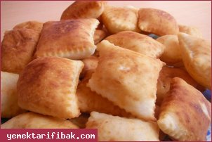
Kullanılan Malzemeler
1 kase yoğurt
1 paket kabartma tozu
1 adet yumurta
tuz
un
kızartmak için sıvı yağ
Hamur Kızartması Yapılışı
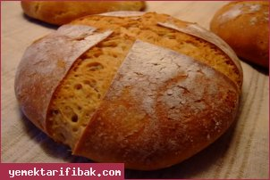
Kullanılan Malzemeler
2 su bardağı un
2 su bardağı tam buğday unu
1 su bardağı lifli un
Yarım paket yas maya
1 su bardağı haşlanmış nohut
Yarım su bardağı zeytin yağ
Nohutlu Köy Ekmeği Yapılışı